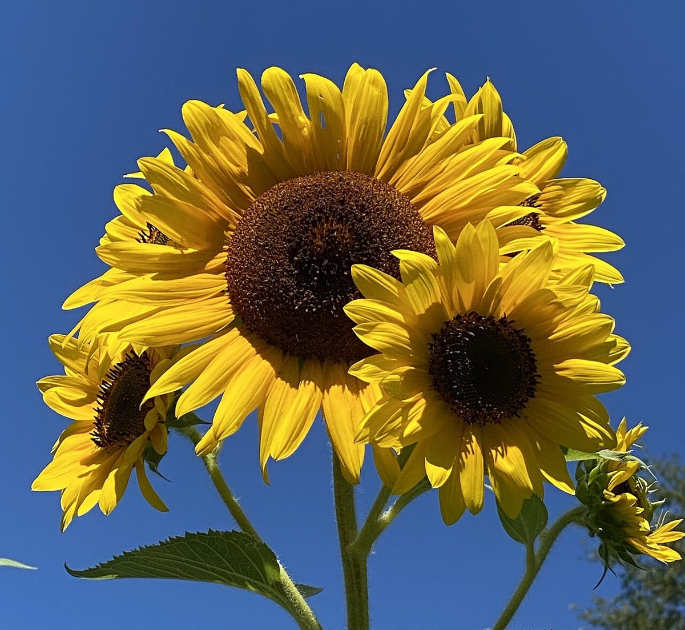

口コミ
行ってみたい、の声
お店の名前から自然に想像できる声を、制作側が創作したものです。
以下は制作側が考えた創作のイメージ例で、実在のお客様の投稿ではありません。実際の口コミ・評価とは関係ありません。
いつか行ってみたいと思っています。店名の「四季」が気になって、どんなお店なのか想像がふくらみます。
まずはInstagramをのぞいてみたいです。投稿を見てから、訪ねる日を決めたいと思います。
季節の変わり目に、一度行ってみたいです。その日が来るのを楽しみにしています。
